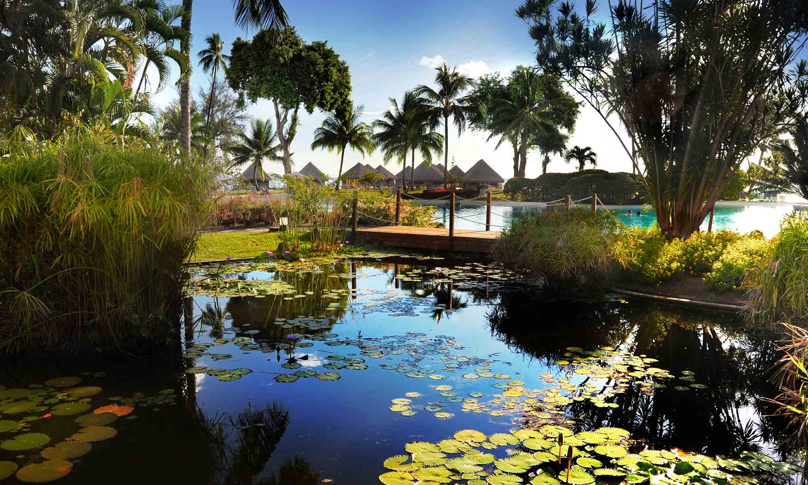
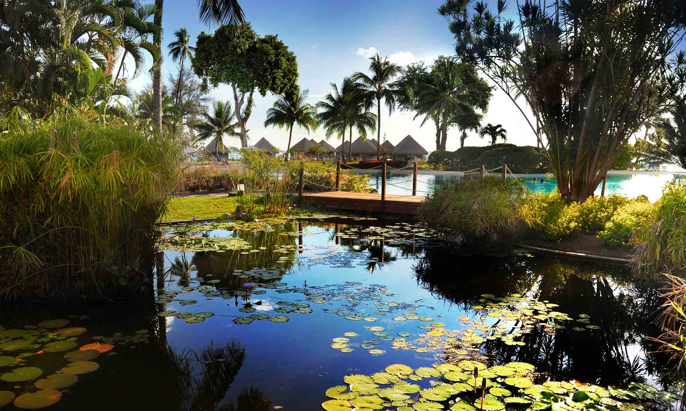

Tahiti
 


It's a magical place
Make your dreams come true and have the best vacation ever!
From luxurious overwater bungalows and stylish resorts to black sand beaches and ancient temples, there is something here for everyone to enjoy!
Tahiti Facts
- Out of all the French Polynesian islands, it's the biggest
- Its capital is Papeete (pronounced “pah-pay-ay-tay”)
- It has two volcanic cones called Tahiti Nui and Tahiti Iti
Tahiti's legendary rock at Point Tata
Long ago, cheifs came and scattered feathers in an ancient ritual that would determine a person's destiny. The way the feathers fell determined if that person could enter Rohutu Noanoa (a.k.a the “Gateway to Paradise”). Rohutu Noanoa was believed to be a place of supreme perfection with water that sparkled like diamonds and an abundance of fish. If that person was allowed entrance, when they died they would turn into a bird and fly away to paradise -- but if not, they became a slave and lived forever in darkness.